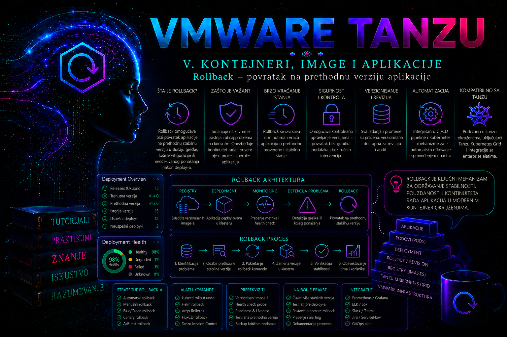

VMware & Tanzu

Lifecycle kao koordinisana promena cele platforme
Lifecycle Tanzu platforme nije skup nepovezanih instalacija zakrpa. To je kontrolisana promena sistema u kome su vCenter Server, ESXi hostovi, vSphere Lifecycle Manager, mrežni i storage sloj, Supervisor, VMware vSphere Kubernetes Service, Kubernetes release-i, Cluster API objekti, paketi i poslovni workload-i povezani ugovorima kompatibilnosti. Komponenta može biti pojedinačno zdrava i podržana, a da kombinacija verzija ipak nije podržana. Zato početno pitanje nije „gde se klikće Upgrade”, već: koje je trenutno dokazano stanje, koji je podržani ciljni skup verzija, kojim redosledom se prelazi između njih i kako se potvrđuje funkcija posle svakog koraka?
Nadogradnja se planira kao lanac promena sa kontrolnim kapijama. Sledeći sloj se menja tek kada prethodni sloj prođe tehničku i servisnu validaciju. Time se smanjuje obim incidenta i čuva mogućnost da se precizno utvrdi poslednja promena. U malom laboratorijskom okruženju više koraka može stati u jedan prozor održavanja; u produkciji su češće odvojeni talasi: pilot, ograničena grupa klastera, šira implementacija i završna stabilizacija.
Ova lekcija se nadovezuje na monitoring, audit i sistematičan troubleshooting iz prethodnih lekcija. Isti dokazi—health status, events, alarms, metrics, logs i audit trag—ovde postaju ulazni i izlazni kriterijumi promene. Lekcija ne zamenjuje release notes niti proizvodnu matricu interoperabilnosti: konkretna putanja zavisi od izdanja vSphere/VCF-a, verzije Supervisor-a i VKS service-a, tipa mreže, ClusterClass-a, Kubernetes release-a, licenci i podrške povezanih proizvoda.
Slojevi, vlasništvo i posledice promene
| Sloj | Lifecycle mehanizam | Ključne zavisnosti | Dokaz uspeha |
|---|---|---|---|
| vCenter Server | VAMI/LCM postupak odgovarajućeg izdanja | ESXi interoperabilnost, backup, DNS/NTP, sertifikati, eksterni proizvodi | Servisi zdravi, inventar dostupan, alarmi pregledani, API i prijava rade |
| ESXi i cluster image | vSphere Lifecycle Manager desired image ili podržani baseline model | OEM add-on, firmware/driver kombinacija, vSAN, DRS/HA, kapacitet za evakuaciju | Compliance=Compliant, hostovi povezani, storage i mrežne putanje zdrave |
| Supervisor | Workload Management/Updates i Supervisor lifecycle | Podržan vCenter/ESXi nivo, Supervisor Services, workload cluster kompatibilnost | Control plane zdrav, namespaces i API dostupni, pre-check bez blokirajućih grešaka |
| VKS Supervisor Service | Supervisor Services lifecycle; embedded ili asinhrono registrovana verzija | Supervisor release, registry dostupnost, podržani VKR/TKR i ClusterClass | Service stanje Activated/Running i očekivana verzija; release-i vidljivi |
| VKS workload klaster | Deklarativna promena Kubernetes release-a i, po potrebi, ClusterClass topologije | VKS service, VKR/TKR, OS image, CNI/CSI/add-ons, PDB i slobodan kapacitet | Cluster Ready, svi čvorovi Ready, verzije usklađene, system podovi zdravi |
| Paketi | PackageInstall/kapp-controller ili tanzu package installed update | PackageRepository, vrednosti konfiguracije, CRD/API kompatibilnost | PackageInstall ReconcileSucceeded=True, aplikativni test i bez novih grešaka |
| Workload-i | GitOps, Helm, kapp ili Kubernetes rollout | API verzije, admission politike, image-i, konfiguracija, podaci i spoljne usluge | Ready/Available, SLO metrike, sintetički i poslovni testovi |
Granica odgovornosti mora biti zapisana pre prozora održavanja. Infrastructure tim obično vodi vCenter, hostove i firmware; platform tim Supervisor, VKS service i klastere; mrežni, storage, identity i security timovi potvrđuju svoje zavisnosti; aplikativni tim validira workload i podatke. Jedna osoba može imati više uloga, ali odobrenje, izvršenje i poslovno prihvatanje ne smeju ostati bez imenovanog vlasnika.
Terminologija i verzijske razlike
Nazivi su se menjali kroz generacije proizvoda. Starija dokumentacija koristi vSphere with Tanzu, TKG Service, Tanzu Kubernetes Release (TKR) i objekat TanzuKubernetesCluster odnosno tkc. Savremena dokumentacija koristi vSphere Supervisor, VMware vSphere Kubernetes Service (VKS), vSphere Kubernetes Release (VKR/KR) i Cluster API objekat Cluster sa ClusterClass/topology modelom. Nasleđene komande u lekciji služe za prepoznavanje postojećih okruženja, ne kao preporuka za nove implementacije.
U vSphere 8 okruženjima administratorska prijava na Supervisor i workload klastere često koristi kubectl vsphere login. U vSphere/VCF 9 dokumentacija uvodi VCF CLI tokove. Tačan alat, sintaksa i dostupni resource kind-ovi proveravaju se u dokumentaciji instaliranog izdanja. Komanda kubectl api-resources je bezbednija od pretpostavke da okruženje poseduje baš tkc, tkr ili kr.
Od vCenter Server 8.0 Update 3 određene VKS verzije mogu biti isporučene kao embedded Supervisor Service, ali dostupnost servisa ne znači da se može odmah aktivirati na neusklađenom Supervisor-u. Za takve putanje zvanični redosled može zahtevati vCenter upgrade, zatim Supervisor upgrade, pa VKS service upgrade. Kasnije VKS service može imati nezavisan lifecycle. Ovo je primer zašto se redosled ne generalizuje bez release notes i Compatibility/Interoperability matrice ciljnog izdanja.
Projektovanje ciljane verzije i putanje nadogradnje
Cilj nije „najnovija verzija”, već podržana i operativno opravdana verzija. Tim formira target state manifest: trenutna i ciljna verzija svake komponente, minimalna međuv verzija, kompatibilni firmware/driver-i, datum kraja podrške, poznati problemi, potreban restart, očekivani prekid i rollback ili restore metoda. Matrica se zamrzava uz change zapis, jer se online dokumentacija može promeniti posle intervencije.
| Provera | Pitanje | Blokira promenu kada... |
|---|---|---|
| Interoperabilnost | Da li su vCenter, ESXi, Supervisor, VKS, NSX/Avi/HAProxy, CSI i backup proizvod međusobno podržani? | Kombinacija nije eksplicitno podržana ili je matrica neodređena |
| Upgrade path | Da li su potrebne posredne verzije? | Pokušava se preskok obaveznog release-a ili Kubernetes minor verzije |
| Hardver | Da li HCL, firmware, driver i OEM add-on čine podržanu celinu? | Željeni image proizvodi konflikt ili uređaj gubi podršku |
| Kapacitet | Može li platforma podneti host/node van rada i surge replike? | PDB, anti-affinity, storage ili CPU/memorija onemogućavaju bezbednu evakuaciju |
| API i ekstenzije | Da li postoje uklonjene Kubernetes API verzije, webhook ili CRD nekompatibilnosti? | Manifesti ili operatori zavise od uklonjenog API-ja |
| Recovery | Postoje li sveži, nezavisni i testirani backup-i i dokumentovan restore? | Postoji samo snapshot ili backup bez dokazanog restore-a |
Kubernetes minor verzije workload klastera nadograđuju se sekvencijalno kada proizvodna putanja to zahteva; preskok sa, na primer, 1.30 direktno na 1.32 nije podržana pretpostavka. Kontrolna ravan se nadograđuje pre worker grupa, uz ograničenje verzijskog skew-a koje određuju Kubernetes i VKS release. Ako VKS UI ili Cluster status nudi samo određene release-e, to je dodatni signal da podržanu putanju određuje servis, a ne proizvoljna vrednost u YAML-u.
Pre-upgrade baseline i go/no-go kapija
Pre promene se ne prikuplja „što više izlaza”, već skup koji omogućava poređenje pre i posle: verzije, zdravlje, kapacitet, alarmi, sertifikati, objekti lifecycle-a, mrežne i storage zavisnosti, aplikativni SLO i poslednje promene. Svi izlazi dobijaju UTC timestamp i change ID. Tajne, tokeni i puni kubeconfig fajlovi ne smeju se prilagati tiketu bez zaštićenog kanala.
date -u
kubectl config current-context
kubectl version
kubectl get nodes -o wide
kubectl get --raw='/readyz?verbose'
kubectl get pods -A
kubectl get pdb -A
kubectl get validatingwebhookconfigurations,mutatingwebhookconfigurations
kubectl get storageclass,pv,pvc -A
kubectl get events -A --sort-by=.metadata.creationTimestampOve komande su read-only i izvršavaju se iz odgovarajućeg Supervisor ili workload context-a. /readyz potvrđuje API server readiness, ali ne dokazuje zdravlje cele platforme. Pregled podova zato traži neočekivana stanja, a ne slepo filtriranje svega što nije Running: završeni Job pod sa Completed stanjem može biti normalan.
Connect-VIServer vcsa01.corp.example
Get-VMHost | Select-Object Name, ConnectionState, PowerState, Version, Build
Get-Cluster | Select-Object Name, HAEnabled, DrsEnabled
Get-Datastore | Select-Object Name, Type, CapacityGB, FreeSpaceGB
Get-AlarmDefinition | Where-Object {$_.Enabled -eq $true} | Select-Object NamePowerCLI primeri su read-only posle prijave, ali zahtevaju najmanje privilegije za čitanje inventara, hostova, datastore-a i alarma. Rezultati se upoređuju sa CMDB-om i vLCM stanjem. Kredencijali se ne ugrađuju u skriptu.
Obavezni go/no-go kriterijumi
- Nema aktivnog P1/P2 incidenta niti neobjašnjenog crvenog alarma na ciljnom failure domenu.
- Backup vCenter-a je uspešan i restore postupak poznat; workload podaci imaju backup prema RPO/RTO-u.
- Supervisor, VKS klasteri i sistemski add-ons su zdravi pre promene.
- DRS/HA, storage putanje, load balancer, DNS, NTP, registry i identity provider su dostupni.
- PDB, affinity i kapacitet omogućavaju drain/evakuaciju bez neželjenog prekida.
- Release notes, poznati problemi i svi obavezni pre-check-i su pregledani; podrška je uključena kada rizik to zahteva.
- Definisani su stop uslovi, maksimalno trajanje faze, komunikacioni kanal i osoba koja donosi odluku o povlačenju.
Preporučeni redosled i kontrolne kapije
- Priprema i pilot. Validira se target state, backup, kompatibilnost i runbook; ista putanja se izvodi u reprezentativnom neprodukcijskom okruženju.
- Management i infrastructure sloj. vCenter se menja prema zvaničnoj putanji, zatim ESXi/vLCM image i zavisni firmware/driver-i. Posle svake faze proveravaju se vCenter servisi, inventar, host connectivity, HA/DRS, mreža i storage.
- Supervisor. Pokreće se ugrađeni pre-check i pregledaju inkompatibilni workload klasteri i Supervisor Services. Nadogradnja se izvršava tek kada nema blokirajućih uslova.
- VKS Supervisor Service i release katalog. Aktivira se verzija kompatibilna sa Supervisor-om; proverava se da su očekivani VKR/KR ili TKR release-i dostupni.
- VKS workload klasteri. Najpre pilot klaster, zatim control plane i worker node pool-ovi u sekvencijalnim minor koracima. Između talasa se proveravaju sistemski add-ons, čvorovi, CNI, CSI i workload.
- Paketi i platform services. Auto-managed paketi prate servis prema dokumentovanom ponašanju; korisnički upravljani paketi menjaju se eksplicitno, sa sačuvanim values fajlom i proverom CRD/API kompatibilnosti.
- Workload-i. Aplikacije se usklađuju sa novim API-jima i paketima kroz deklarativni izvor. Canary ili ograničeni rollout prethodi širokoj promociji.
- Stabilizacija. Promena se ne zatvara odmah po zelenom UI statusu. Tokom posmatračkog perioda porede se greške, latencija, restart-i, resursi, alarmi, backup i poslovni testovi sa baseline-om.
Redosled nije univerzalna zamena za dokumentaciju konkretne verzije. Mrežni ili storage proizvod ponekad zahteva drugačiju tačku u lancu; VCF lifecycle može orkestrirati više komponenti; standalone TKG ima management-cluster postupke koji nisu isti kao VKS na Supervisor-u. Ako se model implementacije ne može nedvosmisleno identifikovati, change se zaustavlja pre prve state-changing radnje.
vSphere Lifecycle Manager, hostovi i failure domeni
vSphere Lifecycle Manager desired image opisuje željeno ESXi izdanje, vendor add-on i dodatne komponente. Compliance check je read-only; remediation menja hostove, uvodi ih u maintenance mode i može ih restartovati. Pre remediation-a proveravaju se admission control, DRS pravila, pinned VM-ovi, lokalni uređaji, vSAN resync, NSX readiness i kapacitet preostalih hostova. Ručno prisilno gašenje Supervisor control plane ili worker VM-ova nije prihvatljiv način oslobađanja hosta.
Kada topologija obuhvata više zone/failure domena, hostovi i kasnije Kubernetes čvorovi menjaju se tako da ne nestane quorum niti dovoljan broj replika iz jedne zone. PDB štiti samo od dobrovoljnih Kubernetes evikcija u granicama svoje specifikacije; ne štiti od nestanka hosta, pogrešne anti-affinity konfiguracije ili storage kvara. Zato se istovremeno proveravaju vSphere placement i Kubernetes scheduling ograničenja.
Nadogradnja Supervisor-a i VKS service-a
U vSphere Client-u se za Supervisor koristi oblast Workload Management i kartica Updates, ali nazivi koraka zavise od verzije. Pre-check proverava stanje i kompatibilnost: workload klastere, Supervisor Services, kapacitet, control plane i druge uslove. Greška pre-check-a nije prepreka koju treba zaobići ručnim menjanjem sistemskih objekata; ona je dokaz koji se mapira na zahtevan preduslov.
Supervisor control plane se tokom update-a menja kontrolisano. Administrator prati task/event u vCenter-u, Supervisor status i dostupnost API-ja. Kratke tranzicije pojedinačnih control plane VM-ova mogu biti očekivane, ali gubitak API dostupnosti izvan dokumentovanog prozora, neformiranje novog čvora ili trajno degradirano stanje aktiviraju stop uslov. Korisničko uređivanje sistemskih namespace-a, deployment-a i internih anotacija bez izričitog KB postupka i podrške može učiniti okruženje nepodržanim.
# Supervisor context; read-only inventar pre i posle promene
kubectl api-resources | grep -Ei 'cluster|kubernetesrelease|tanzukubernetesrelease|packageinstall'
kubectl get clusters -A
kubectl get kcp,md,machine -A
kubectl get pkgi -A
kubectl get pods -A
# Koristi samo resource kind koji postoji u konkretnom izdanju
kubectl get kr
kubectl get tkrPoslednje dve komande su alternativne, ne izvode se obe naslepo. Ako API server odgovori da resource type ne postoji, administrator se vraća na kubectl api-resources i dokumentaciju svog izdanja. Kod private-registry ili air-gapped modela dodatno se proveravaju registracija VKS verzije, dostupnost svih image-a, CA trust i pull kredencijali pre početka.
Nadogradnja VKS workload klastera
Deklarativna specifikacija klastera je izvor željenog stanja. U savremenom ClusterClass modelu release se menja u topology delu Cluster objekta; tačan format verzije i polje moraju odgovarati API-ju instaliranog VKS izdanja. U nasleđenom TKC modelu koristi se odgovarajuće distribution.version polje. Manifest iz dokumentacije druge generacije ne sme se kopirati bez kubectl explain i pregleda postojećeg objekta.
# Read-only: sačuvaj trenutno stanje i proveri dostupne release-e
kubectl -n team-a get cluster prod-vks-01 -o yaml > prod-vks-01-before.yaml
kubectl -n team-a describe cluster prod-vks-01
kubectl -n team-a get kcp,md,machine
kubectl explain cluster.spec.topology.version
# State-changing: primer deklarativne izmene; ciljna vrednost mora biti ponuđen podržani release
kubectl -n team-a patch cluster prod-vks-01 --type=merge \
-p '{"spec":{"topology":{"version":"TARGET_SUPPORTED_RELEASE"}}}'Upozorenje: patch je produkciona promena. Placeholder se nikada ne izvršava doslovno; cilj se uzima iz release kataloga i odobrenog manifesta. Preferira se izmena Git izvora i GitOps reconciliacija, jer direktni patch može biti vraćen kao drift. Pre promene se proverava da li ClusterClass upgrade zahteva dodatna polja, novi OS image ili posebnu migraciju.
# Workload context; read-only validacija
kubectl get nodes -o custom-columns='NAME:.metadata.name,VERSION:.status.nodeInfo.kubeletVersion,OS:.status.nodeInfo.osImage,READY:.status.conditions[?(@.type=="Ready")].status'
kubectl get pods -A
kubectl get daemonsets,statefulsets,deployments -A
kubectl get pdb -A
kubectl get csinodes
kubectl get events -A --sort-by=.metadata.creationTimestamp | tail -n 100Tokom rolling zamene čvorova očekuje se privremena mešavina dozvoljenih verzija. Završni kriterijum je usklađena ciljna verzija, svi čvorovi Ready, sve Machine/MD/KCP conditions zdrave i bez zaglavljenih evikcija. Ako PDB blokira drain, ne briše se automatski: utvrđuje se da li workload ima dovoljno replika i da li vlasnik aplikacije odobrava privremenu promenu. --force i ručno brisanje Machine/VM objekata nisu standardni rollback.
Paketi, add-ons i platform services
Treba razlikovati auto-managed sistemske pakete, Supervisor Services i korisnički instalirane standardne pakete. Auto-managed paket se ne „popravlja” ručnom zamenom image-a u njegovom Deployment-u, jer reconciler vraća deklarisano stanje. Kod PackageInstall resursa proveravaju se ReconcileSucceeded, ReconcileFailed, verzija PackageMetadata/Package i povezana App/kapp evidencija.
# Read-only inventar i konfiguracioni obrazac
tanzu package installed list -A
tanzu package available list -A
tanzu package installed get cert-manager -n packages
kubectl get pkgi,app -A
# Sačuvaj vrednosti pre promene; dostupnost zastavice proveri za instaliranu CLI verziju
tanzu package installed get cert-manager -n packages --values-file-output values-before.yaml
# State-changing: primer eksplicitne package nadogradnje
tanzu package installed update cert-manager \
--namespace packages \
--version TARGET_SUPPORTED_VERSION \
--values-file values-before.yamlPre update-a se porede schema vrednosti i release notes. Stari values fajl može sadržati uklonjen ili preimenovan ključ. CRD nadogradnja je naročito osetljiva: vraćanje kontrolera na staru verziju ne vraća automatski CRD schema niti konvertuje već sačuvane custom resurse. Zato package rollback može zahtevati novu deklarativnu instalaciju podržane verzije, restore specifičnih resursa ili forward-fix, a ne samo izbor starog paketa.
Workload kompatibilnost, rollout i rollback
Pre promene Kubernetes minor verzije skeniraju se manifesti i živi objekti za deprecated ili uklonjene API-je. Admission webhook-ovi, operatori, CSI/CNI integracije i monitoring agenti moraju podržavati ciljnu verziju. Workload se zatim promovše canary/rolling strategijom, uz immutable image tag ili digest, readiness/startup probe i merljive SLO pragove.
kubectl rollout undo vraća samo prethodni Pod template Deployment-a; ne vraća ConfigMap, Secret, Service, Ingress, CRD, PersistentVolume niti bazu. Rollback kreira novu reviziju, ne briše audit istoriju. U GitOps ili Helm okruženju ručni undo ne menja izvor istine i reconciler može ponovo primeniti problematičnu verziju. Zato se produkcioni povratak izvodi kroz Git revert/novi commit ili helm rollback kada Helm poseduje ceo release, uz poseban plan za podatke i migracije.
# Read-only dijagnostika Deployment rollout-a
kubectl -n payments rollout history deployment/checkout-api
kubectl -n payments rollout status deployment/checkout-api --timeout=180s
kubectl -n payments describe deployment checkout-api
kubectl -n payments logs deployment/checkout-api --all-containers=true --since=10m
# State-changing; koristi se tek posle provere revizije i kompatibilnosti podataka
kubectl -n payments rollout undo deployment/checkout-api --to-revision=4Backup, snapshot, rollback i restore nisu isto
| Mehanizam | Šta rešava | Važno ograničenje |
|---|---|---|
| Konfiguracioni backup vCenter-a | Oporavak appliance konfiguracije prema podržanom postupku | Nije zamena za backup workload podataka niti proizvoljan VM snapshot |
| VM snapshot | Kratkotrajna tehnička tačka za podržane scenarije | Nije dugoročni backup; nekonzistentan snapshot distribuiranog sistema može biti neupotrebljiv |
| Kubernetes/Velero backup | Resursi i, kada je konfigurisano, volume podaci | Restore se mora testirati; CSI snapshot zavisi od storage podrške |
| Rollback Deployment/package-a | Povratak deklarativne verzije pojedinačne komponente | Ne vraća podatke, zasebne objekte ni celu platformu |
| Forward-fix | Ispravka kada povratak nije podržan ili bi oštetio podatke | Zahteva jasno ograničenje incidenta i novu validiranu promenu |
Za vCenter i neke infrastrukturne komponente vendor može podržavati restore ili rollback samo pod određenim uslovima; za ESXi se češće govori o remedijaciji ili ograničenom bootbank rollback-u, a ne o univerzalnom „undo”. Supervisor i VKS upgrade ne treba tretirati kao reverzibilnu transakciju. Pre početka se iz release notes utvrđuje da li je rollback podržan; ako nije, recovery plan je popravka napred, redeploy ili restore iz dokazano kompatibilne kopije.
Integrisani praktikum – pilot nadogradnja platforme
Cilj i kontekst. Tim nadograđuje pilot VKS klaster lab-vks-01 u namespace-u platform-lab za jednu podržanu Kubernetes minor verziju, zatim validira paket i aplikaciju. vCenter/ESXi/Supervisor koraci se u vežbi planiraju i proveravaju kroz GUI, ali se ne pokreću bez posebnog laboratorijskog odobrenja. Time se vežba kompletan change tok bez rizičnog simuliranja kvara management plane-a.
Topologija. Jedan vCenter, vSphere cluster sa najmanje tri hosta, jedan Supervisor, VKS service, pilot VKS klaster sa tri control plane instance i najmanje tri worker čvora raspoređena preko dostupnih failure domena, CNI/CSI, test PackageInstall i aplikacija checkout-api.
Preduslovi i prava. Potrebni su vSphere read privilegije za baseline, odobrena Workload Management prava za upgrade koji će izvršiti platform administrator, Supervisor i workload kubeconfig sa najmanjim potrebnim pravima, kompatibilni kubectl, Tanzu CLI samo ako izdanje koristi CLI-managed package i pristup change evidenciji. Backup i restore dokaz moraju biti sveži. Rizik je srednji do visok: menjaju se čvorovi i sistemski add-ons, pa vežba ne pripada deljenoj produkciji.
- Formiraj change paket. Zapiši trenutne i ciljane verzije, linkovane release notes u change sistemu, vlasnike, trajanje, stop uslove i poslovni smoke test. Očekivani rezultat: nema praznog polja u matrici kompatibilnosti i cilj je tačno jedna podržana minor etapa.
- Proveri vSphere baseline u GUI-ju. U vSphere Client-u pregledaj vCenter verziju, hostove, vLCM compliance, aktivne alarme, DRS/HA, datastore kapacitet i Workload Management status. Ne pokreći remediation. Validacija: nema neobjašnjenih alarma, host disconnect-a, vSAN resync-a niti nedovoljnog kapaciteta za jedan host van rada.
- Sačuvaj Supervisor dokaze.
Validacija: svi fajlovi su neprazni, Cluster condition je Ready/True, Machine objekti zdravi, a neočekivani podovi van zdravog stanja istraženi.mkdir -p ./chg-vks-lab date -u > ./chg-vks-lab/time-before.txt kubectl config current-context kubectl get clusters -A > ./chg-vks-lab/clusters-before.txt kubectl -n platform-lab get cluster lab-vks-01 -o yaml > ./chg-vks-lab/cluster-before.yaml kubectl -n platform-lab get kcp,md,machine -o wide > ./chg-vks-lab/machines-before.txt kubectl get pkgi -A > ./chg-vks-lab/packages-before.txt kubectl get pods -A > ./chg-vks-lab/supervisor-pods-before.txt - Pokreni zvanični pre-check. U Workload Management → Updates izaberi ciljnu Supervisor/VKS fazu samo za pregled i pokreni ponuđeni pre-check. Stop uslov: inkompatibilan workload cluster, nezdrav addon, nekompatibilan Supervisor Service ili nedostatak resursa. Upozorenje se ne ignoriše bez vendor dokumentacije i change odobrenja.
- Validiraj workload pre promene.
Validacija: API je ready, čvorovi su Ready, sistemski podovi zdravi, PDB ne onemogućava jedan planirani drain i aplikacija je dostupna pre upgrade-a.# Prebaci se na workload context pre izvršenja kubectl config current-context kubectl get --raw='/readyz?verbose' > ./chg-vks-lab/readyz-before.txt kubectl get nodes -o wide > ./chg-vks-lab/nodes-before.txt kubectl get pods -A > ./chg-vks-lab/pods-before.txt kubectl get pdb -A > ./chg-vks-lab/pdb-before.txt kubectl -n payments rollout status deployment/checkout-api --timeout=120s - Simuliraj deklarativnu izmenu bez upisa. Izvezi odobreni Cluster manifest, promeni samo release polje u radnoj kopiji i izvrši server-side dry-run ako API to podržava.
Validacija: preview pokazuje samo odobrenu ciljnu verziju i očekivane default vrednosti; nema neočekivane promene node pool-a, storage class-a, mreže ili replica count-a.kubectl -n platform-lab apply --server-side --dry-run=server \ -f lab-vks-01-target.yaml -o yaml > ./chg-vks-lab/cluster-preview.yaml - Izvrši upgrade kroz izvor istine. Merge-uj odobren manifest u GitOps repozitorijum ili neka ovlašćeni platform administrator primeni provereni YAML. Ovo je state-changing korak. Zabeleži vreme i resourceVersion. Očekivani rezultat: Cluster conditions pokazuju aktivnu reconciliaciju i kontrolisanu zamenu control plane/worker mašina.
- Prati iz Supervisor context-a.
kubectl -n platform-lab get cluster,kcp,md,machine -wKomanda je read-only, ali
-wostaje aktivan do prekida sa Ctrl+C. Prati se formiranje novih mašina, Ready stanje i uklanjanje starih. Stop uslov: condition se ne menja u dokumentovanom roku, control plane gubi quorum, nova VM ne dobija mrežu/storage ili addon postaje nezdrav. - Validiraj novi klaster. Prijavi se u obnovljeni workload context ako su kredencijali rotirani i ponovi baseline komande. Uporedi kubelet verzije, OS image, podove, CSI/CNI, događaje i aplikativni smoke test.
Validacija: svi čvorovi imaju ciljnu verziju i Ready=True, nema novih warning događaja povezanih sa CNI/CSI ili aplikacijom, a HTTP test završava kodom 0.kubectl get nodes -o wide kubectl get pods -A kubectl get events -A --sort-by=.metadata.creationTimestamp | tail -n 100 kubectl -n payments rollout status deployment/checkout-api --timeout=180s kubectl -n payments run lifecycle-smoke-test \ --image=curlimages/curl:8.12.1 --restart=Never --rm -i \ --command -- curl -fsS --max-time 10 \ http://checkout-api.payments.svc.cluster.local:8080/health - Validiraj pakete.
Validacija: PackageInstall objekti imaju očekivanu verziju i uspešnu reconciliaciju. Ako Tanzu CLI nije deo konkretnog modela, preskače se njegova komanda, ne instalira se samo radi provere.kubectl get pkgi -A kubectl get pkgi -A -o custom-columns='NAMESPACE:.metadata.namespace,NAME:.metadata.name,VERSION:.spec.packageRef.version,RECONCILE:.status.conditions[?(@.type=="ReconcileSucceeded")].status' tanzu package installed list -A - Incident grana: node upgrade je zaglavljen. Sačuvaj
Cluster, KCP/MD/Machine conditions, događaje, neuspešni VM task, podove i vremena. Razdvoji simptom od uzroka: PDB/eviction, nedostatak kapaciteta, image pull, CNI/CSI addon, DHCP/IPAM/DNS ili vSphere provisioning. Ne briši Machine niti PDB dok hipoteza nije potvrđena. Privremena mera može biti zaustavljanje sledećeg talasa; trajna mera rešava stvarni resurs ili kompatibilnost. Ako vendor rollback nije podržan, eskalira se sa dokazima i primenjuje dokumentovan forward-fix. - Zatvaranje i rollback laboratorije. Ako je upgrade uspešan, ciljna verzija postaje novi baseline i ne vraća se samo radi vežbe. Ako dry-run ili pre-check nije prošao, nema state promene: ukloni samo lokalne preview fajlove po politici laboratorije. Ako je primenjena pogrešna deklarativna vrednost, ne vraćaj staru Kubernetes minor verziju bez potvrde da je downgrade podržan; pauziraj reconciliaciju samo po dokumentovanom postupku i eskaliraj platform timu. Kriterijum završetka: svi tehnički i poslovni kriterijumi su dokazani, posmatrački period završen i change zapis sadrži baseline pre/posle, odstupanja i vlasnika naredne akcije.
Troubleshooting matrica tokom lifecycle promene
| Simptom i obim | Dokaz i verovatan uzrok | Bezbedna reakcija |
|---|---|---|
| Supervisor pre-check blokira upgrade | Inkompatibilan Cluster/Supervisor Service, nezdrav addon ili kapacitet; pregled task-a, conditions i KB poruke | Zaustavi promenu, uskladi navedenu komponentu; ne zaobilazi pre-check internim patch-em |
| Nova control plane/worker Machine ostaje Provisioning | vCenter task, VM event, IPAM/DHCP, DNS, storage ili quota | Sačuvaj objekte i events, potvrdi infrastrukturni uzrok, spreči sledeći talas i koriguj zavisnost |
| Drain blokiran | PDB, finalizer, local data ili nereplikovan workload | Uključi vlasnika aplikacije; poveća replike ili odobreno prilagodi PDB, bez automatskog force brisanja |
| Čvor Ready, system pod nije zdrav | CNI/CSI/DNS/addon PackageInstall; logs, events i reconcile conditions | Ne nastavljaj talas; proveri kompatibilnu addon verziju i primeni vendor postupak |
| Paketi se vraćaju na staro stanje | GitOps/kapp reconciler i drift od izvora istine | Promeni deklarativni izvor; ne vodi paralelnu ručnu istoriju |
| Aplikacija pada posle uspešnog cluster upgrade-a | Uklonjen API, webhook/operator, policy, kernel/OS ili dependency razlika | Ograniči incident, vrati aplikativnu promenu samo ako je kompatibilna sa podacima; platform downgrade ne pretpostavljaj |
Za vCenter/Supervisor zadatke početni dokazi su vSphere Client Recent Tasks, Events, alarmi i Workload Management status. Za VKS su to Cluster/KCP/MD/Machine conditions, Kubernetes događaji i sistemski podovi. Za pakete su to PackageInstall/App conditions i kapp-controller logovi, a za workload Deployment conditions, događaji, container logovi i SLO metrike. Vremenske oznake moraju biti korelisane uz provereno NTP stanje; bez toga se lako povežu nepovezani događaji.
Administratorske prakse
- Održavaj verzijski registar. Za svaki environment čuvaj build, release, ClusterClass, OS image, mrežni/storage model, package i vlasnika; proveravaj ga najmanje mesečno i pre svakog change-a.
- Automatizuj read-only pre-check. Skripta sme da prikuplja verzije, conditions, alarme i kapacitet, ali odluka o kompatibilnosti mora koristiti zvaničnu matricu i release notes. Rezultat se verzionira uz change ID.
- Koristi pilot i talase. Najmanji reprezentativan failure domen prolazi prvi; između talasa postoji merljiv posmatrački period i stop uslov.
- Ne mešaj vlasništvo nad deklarativnim stanjem. GitOps, Helm, kapp i ručne komande ne smeju istovremeno upravljati istim poljima bez jasnog pravila.
- Testiraj restore, ne samo backup. Uspešan job nije dokaz obnovljivosti. Periodično obnovi reprezentativan klaster/workload u izolovanom okruženju i potvrdi integritet i RTO.
- Planiraj sertifikate i kredencijale. Proveri rokove, trust chain, registry CA i mogućnost ponovne prijave posle upgrade-a; tajne ne izlaži u logovima i tiketima.
- Čuvaj audit dokaz. Izvršilac, odobrenje, ciljna verzija, početak/kraj, komande ili pipeline run, rezultati kapija i odstupanja moraju biti povezani u jednom change zapisu.
Završna kontrolna tačka
- Administrator ume da razlikuje vSphere, Supervisor, VKS service, workload cluster, package i workload lifecycle.
- Može da sastavi current/target verzijsku matricu i dokaže interoperabilnost primarnim izvorima.
- Prepoznaje staru TKG/TKR/TKC i novu VKS/VKR/ClusterClass terminologiju bez mešanja procedura.
- Definiše go/no-go i stop uslove, vlasnike, pilot, talase i posmatrački period.
- Prikuplja read-only baseline iz vSphere-a, Supervisor-a i workload klastera bez izlaganja tajni.
- Razume zašto se Kubernetes minor verzije ne preskaču bez eksplicitno podržane putanje.
- Može da prati Cluster, KCP, MachineDeployment i Machine conditions i razlikuje platformsku od aplikativne greške.
- Validira CNI, CSI, DNS, pakete, admission webhooks, čvorove i poslovni workload posle promene.
- Razlikuje rollback, restore, redeploy i forward-fix i ne obećava nepodržan downgrade.
- Zatvara promenu tek kada su tehnički, bezbednosni i poslovni kriterijumi dokazani i dokumentovani.
Zaključak
Nadogradnja Tanzu platforme je uspešna samo kada ceo podržani lanac ostane funkcionalan: vSphere obezbeđuje zdravu infrastrukturu, Supervisor stabilnu kontrolnu ravan, VKS service odgovarajuće release-e, workload klasteri zdrav Kubernetes, paketi platform services, a aplikacije dokazanu poslovnu funkciju. Zeleni indikator jedne komponente nije dovoljan ako je sledeća zavisnost degradirana.
Najvažnija praktična veština nije brzo pokretanje upgrade-a, već disciplinovano smanjivanje neizvesnosti: tačan inventar, verzijska matrica, testirana putanja, baseline, kontrolne kapije, pilot, ograničen blast radius, korelacija dokaza i unapred definisana odluka kada se staje. Administrator pritom mora znati granice alata: vLCM remediation, Supervisor update, VKS release promena, package update i Deployment rollback nisu isti mehanizam i ne vraćaju iste vrste stanja.
Odgovoran lifecycle završava se tek posle posmatračkog perioda, potvrde SLO-a, backup/restore spremnosti i ažuriranja dokumentacije. Kada rollback nije podržan ili bi ugrozio podatke, profesionalna odluka je zaustaviti dalje promene, sačuvati dokaze i sprovesti dokumentovan forward-fix ili recovery uz odgovarajuće vlasnike i podršku. Time se nadogradnja pretvara iz rizičnog niza klikova u ponovljiv enterprise proces.